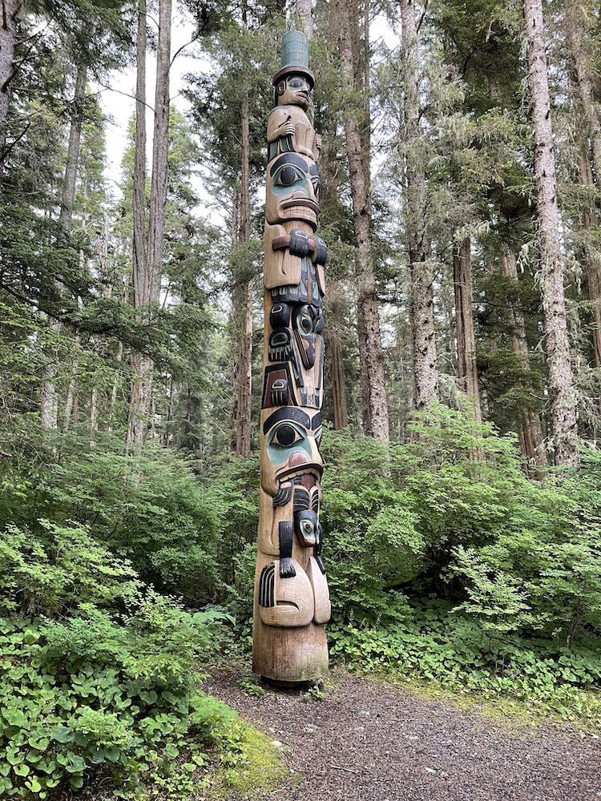
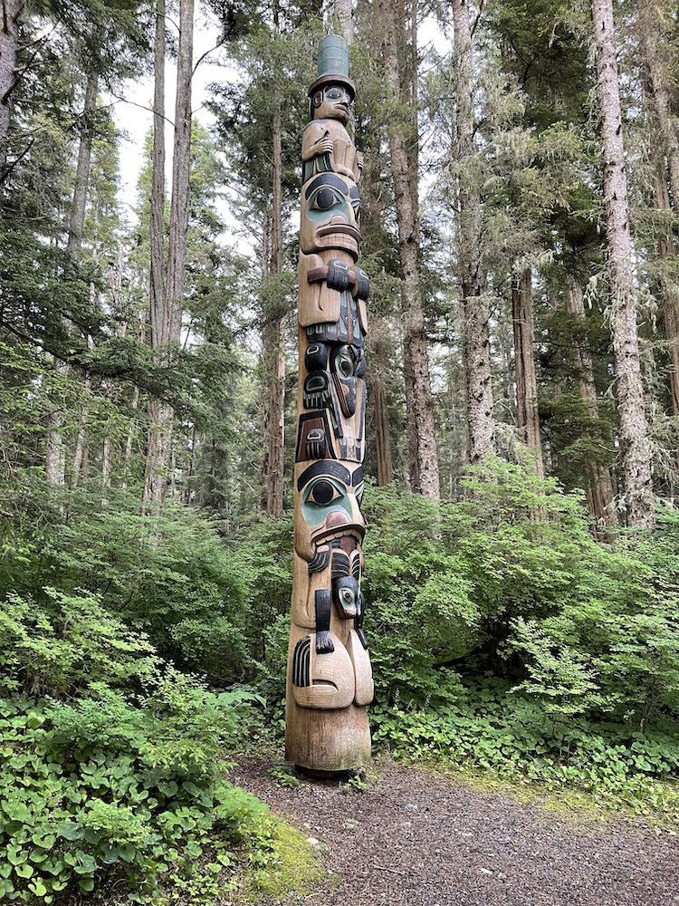

The City of Sitka Alaska
The population of Sitka was 8,458 people according to the 2020 census, which makes it the fifth most populated city in Alaska. The total area (including water) is 4,811 square miles, making Sitka the largest city in the U.S. by total area. However, the developed land area is small.
Being on an island, there is no interstate highway system. The longest stretch of road is Halibut Point Road and Sawmill Creek Road which connect together at a traffic circle. This stretches a total of approximately 14 miles with a maximum speed of 45 mph. But, most of this stretch is not developed.
Downtown Sitka provides shopping, eating, and entertainment within a reasonable walking area.
The Sitka Rocky Gutierrez Airport is bounded by water on both ends. Besides the airport, Japonski Island is also home to the U.S. Coast Guard, Mt. Edgecombe Medical Center, and Guardian Flight Air Ambulance.
Totem Park
No visit to Sitka can be complete without visiting Sitka National Historic Park/Totem Park. The park consists of walking trails through a natural rain forest with totem poles featured at various points along the trails. The visitor center provides views of historic totem poles and pole fragments. An educational film is also available to view. (More information)
 

Fair Weather Activities
Camping
There are opportunities for camping around Sitka. North if Sitka, near the north end of Halibut Point Road, is the Old Sitka State Park and Starrgavin campground at Starrgavin Bay. To the south, at the end of Sawmill Creek Road is the Sawmill Creek campground.
Canoeing and Kayaking
The beautiful Blue Lake is a reservoir located 3 miles to the east of Sitka. The end of Blue Lake Road accesses the reservoir, which can be used for canoeing and kayaking. Besides the majestic Blue Lake, various excursion companies offer kayaking adventures around Sitka Sound.
Hiking
Mount Verstovia and Harbor Mountain hiking trails provide commanding overlooks, as well as an array of vegetation. It is highly recommended to wear bear bells and carry bear spray whenever hiking around Sitka.